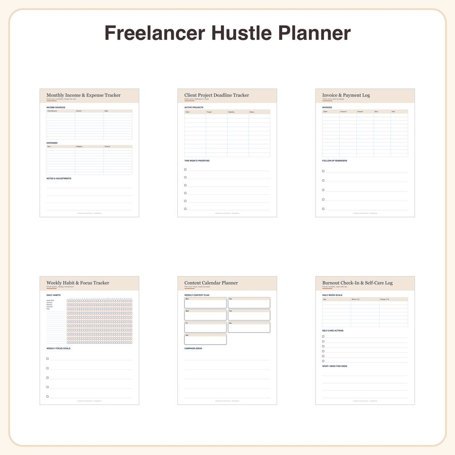

$4.99
View on EtsyDitch the spreadsheet spiral. This 6-page printable planner gives freelance designers, writers, and side-hustlers one clean system to track money, clients, and sanity — no formulas required. What's included (6 printable pages): • Monthly income & expense tracker with a simple bar-chart grid • Client project deadline tracker with calendar rows • Invoice & payment log table • Weekly habit & focus tracker with checkbox grid • Content calendar planner page with weekly columns • Burnout check-in & self-care log with a mood scale Style: Minimalist modern layouts in a warm terracotta and ink-navy palette, clean sans-serif headers, generous white space, and subtle dotted grid backgrounds. Pages are clean tables and checklists — designed for easy handwriting or digital fill-in, without any icon illustrations. File formats & sizes: • High-resolution PDF, US Letter (8.5x11in) and A4 • Instant digital download, no physical item shipped How to use: • Print at home or a copy shop and fill in by hand • Or import into GoodNotes, Notability, or similar apps for digital fill-in with a stylus License: For personal use and small-business commercial use (up to 500 printed units). Please do not resell, share, or redistribute the files themselves. Honest disclosure: These designs were created by our shop with the help of AI tools as part of our design process.